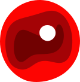

Une exploration immersive de la photographie en volume.
Naviguez à travers les couches de l'image en scrollant — chaque niveau de zoom révèle une nouvelle dimension sonore et visuelle.
Holosene — 2025

Technique Lenis: accumulateur virtuel + lerp adaptatif
Compensation pour synchroniser avec trackpad
Distribution fluide sur plusieurs frames (0.15-0.25 optimal)
Current Mode: Detecting...
Last DeltaY: 0
Last Frequency: 0ms
Scroll to see live detection!